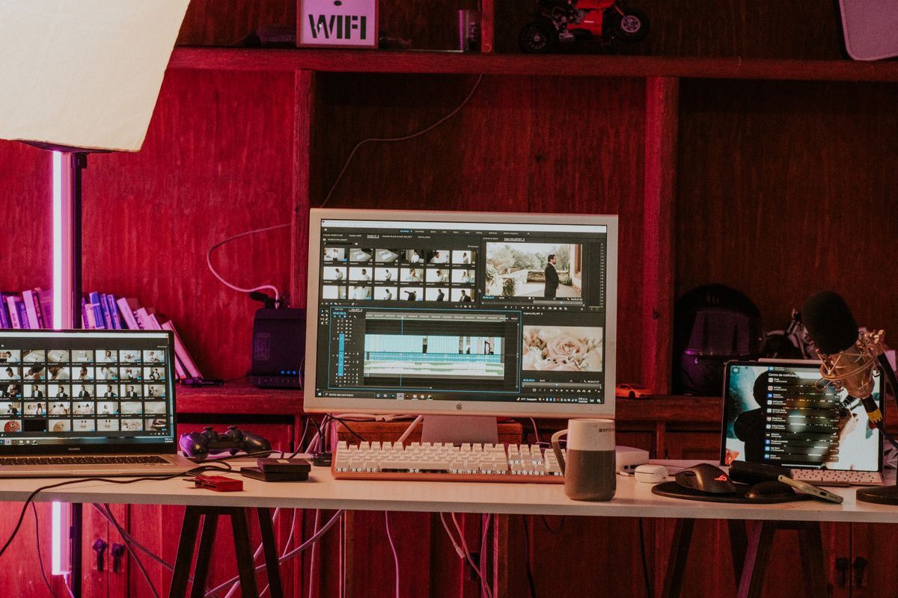
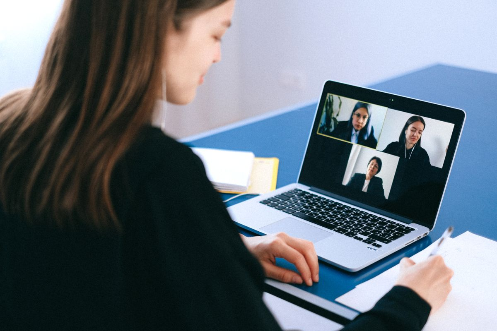
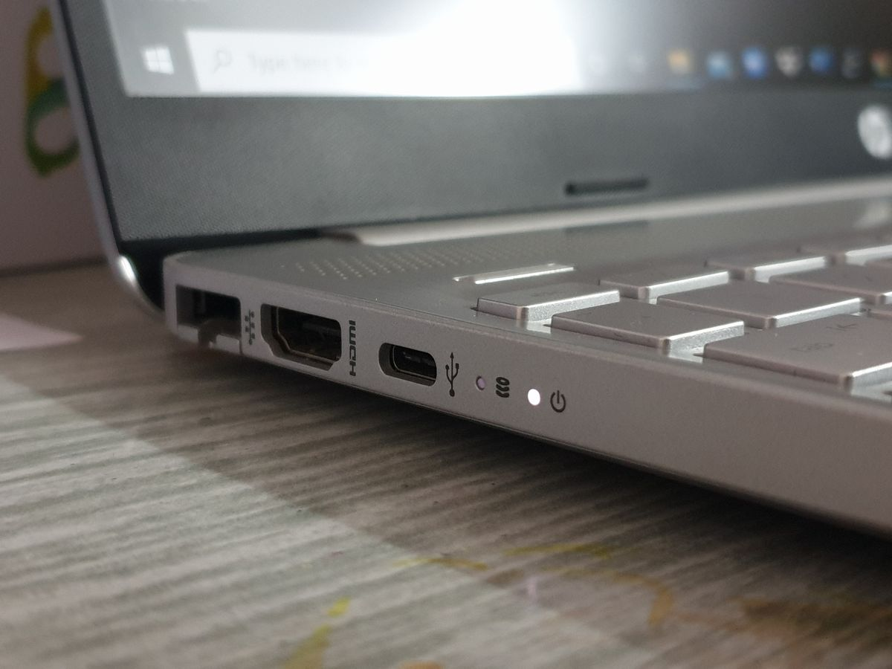

แป้นเหยียบ USB (Foot Pedal) ตัวช่วยลับที่ทำให้มือว่างและทำงานเร็วขึ้นบนโต๊ะทำงาน 2026
แป้นเหยียบ USB คืออะไร เหมาะกับใคร และเลือกซื้อยังไงให้คุ้ม รวมประเภทแป้นเหยียบ เกณฑ์การเลือก และข้อควรรู้ก่อนใช้งานจริง สำหรับสายถอดเทป ตัดต่อ และประชุมออนไลน์
อัปเดต กรกฎาคม 2026
ลองนึกภาพว่าเวลาทำงานหน้าจอ เราต้องคอยละมือจากคีย์บอร์ดไปกดปุ่มซ้ำ ๆ ทั้งวัน ไม่ว่าจะเป็นการหยุด-เล่นไฟล์เสียงตอนถอดเทป การสลับหน้าจอ หรือการกด Mute ตอนประชุม การขยับมือเล็ก ๆ เหล่านี้ดูเหมือนไม่มีอะไร แต่พอรวมกันทั้งวันกลับกินเวลาและทำให้จังหวะการทำงานสะดุดโดยไม่รู้ตัว แป้นเหยียบ USB หรือ Foot Pedal คืออุปกรณ์เล็ก ๆ ที่ย้ายงานกดปุ่มซ้ำ ๆ เหล่านั้นไปไว้ที่เท้า ทำให้มือทั้งสองข้างว่างสำหรับงานหลักได้เต็มที่ บทความนี้จะพาไปรู้จักว่ามันคืออะไร เหมาะกับใคร และเลือกซื้อยังไงให้คุ้ม
แป้นเหยียบ USB คืออะไร ทำงานอย่างไร
แป้นเหยียบ USB คือสวิตช์ที่วางไว้ใต้โต๊ะให้เหยียบด้วยเท้า เมื่อเสียบเข้ากับคอมพิวเตอร์ผ่านพอร์ต USB เครื่องจะมองเห็นมันเหมือนคีย์บอร์ดหรือเมาส์ตัวหนึ่ง เราสามารถตั้งค่าให้การเหยียบแต่ละครั้งเทียบเท่ากับการกดปุ่มใดก็ได้ เช่น เว้นวรรค, Enter, Ctrl+C, หรือคีย์ลัดที่เราใช้บ่อย ๆ บางรุ่นมีแป้นเดียว บางรุ่นมีสองถึงสามแป้นให้ตั้งค่าแยกกัน ทำให้เท้าซ้าย เท้ากลาง และเท้าขวาสั่งงานคนละอย่างได้
หัวใจสำคัญคือมันช่วย "แบ่งเบา" งานจากมือไปให้เท้า ซึ่งปกติเราแทบไม่ได้ใช้เท้าทำอะไรระหว่างนั่งทำงานอยู่แล้ว
ใครบ้างที่ควรมีแป้นเหยียบ USB
กลุ่มที่ได้ประโยชน์ชัดที่สุดคือคนที่ต้องกดปุ่มเดิมซ้ำ ๆ ตลอดเวลา ได้แก่:
- คนถอดเทป-พิมพ์งานจากเสียง (Transcription) ที่ต้องหยุดและเล่นไฟล์เสียงตลอด การใช้เท้าควบคุมทำให้มือพิมพ์ได้ต่อเนื่องไม่ต้องละมือ
- สายตัดต่อวิดีโอและคนทำงานเสียง ที่ต้องกด play/stop หรือ mark จุดตัดบ่อย ๆ
- คนที่ประชุมออนไลน์ทั้งวัน สามารถตั้งแป้นเหยียบให้เป็นปุ่ม Mute/Unmute แบบ push-to-talk ได้ ทำให้มือว่างจดโน้ตหรือพิมพ์ตอบไปด้วย
- สายเขียนโค้ดและคนใช้คีย์ลัดหนัก ๆ ที่อยากย้ายปุ่มโมดิฟายเออร์อย่าง Ctrl หรือ Shift ไปไว้ที่เท้า เพื่อลดการงอข้อมือในท่าแปลก ๆ
- เกมเมอร์บางคนก็ใช้แป้นเหยียบเป็นปุ่มเสริมในเกมที่ปุ่มบนคีย์บอร์ดไม่พอ

แนะนำประเภทแป้นเหยียบที่น่าสนใจ
1. แป้นเหยียบเดี่ยว สำหรับงานง่าย ๆ

ถ้าเพิ่งเริ่มต้นและอยากลองว่าเวิร์กกับตัวเองไหม แป้นเหยียบแบบปุ่มเดียวคือจุดเริ่มที่ดีที่สุด ราคาไม่แพง ตั้งค่าง่าย เหมาะกับงานที่ต้องกดปุ่มเดียวซ้ำ ๆ เช่น Mute ตอนประชุม หรือกด Enter เวลาคีย์ข้อมูล
แป้นเหยียบ USB แบบปุ่มเดียว เป็นตัวเลือกที่คุ้มค่าสำหรับคนที่อยากทดลองใช้งานก่อนตัดสินใจลงทุนกับรุ่นที่ซับซ้อนกว่า
2. แป้นเหยียบสามปุ่ม สำหรับสายถอดเทปและตัดต่อ
รุ่นสามปุ่มออกแบบมาเพื่อคนถอดเทปโดยเฉพาะ ปุ่มกลางมักตั้งเป็น play/pause ส่วนปุ่มซ้าย-ขวาเป็นถอยหลังและเดินหน้า ทำให้ควบคุมไฟล์เสียงได้ทั้งหมดด้วยเท้าโดยไม่ต้องแตะเมาส์เลย
แป้นเหยียบ USB แบบสามปุ่มตั้งโปรแกรมได้ เหมาะมากถ้างานหลักของคุณคือการพิมพ์ตามเสียงหรือตัดต่อคลิป
3. แป้นเหยียบตั้งโปรแกรมได้อิสระ พร้อมซอฟต์แวร์
รุ่นระดับสูงมาพร้อมซอฟต์แวร์ที่ให้ตั้งค่าคีย์ลัดหรือแมโครทั้งชุดต่อการเหยียบหนึ่งครั้ง เช่น เหยียบทีเดียวให้ก๊อปปี้แล้ววางในอีกหน้าต่างทันที เหมาะกับคนที่มี workflow ซับซ้อนและอยากรีดประสิทธิภาพให้เต็มที่
แป้นเหยียบ USB ตั้งโปรแกรมแมโครได้ เป็นการลงทุนที่คุ้มสำหรับสายทำงานที่ทำงานเดิมซ้ำ ๆ ทุกวัน
เกณฑ์การเลือกซื้อแป้นเหยียบ USB

จำนวนปุ่ม ถ้าใช้แค่ปุ่มเดียวก็เลือกรุ่นเดี่ยวให้ประหยัดและไม่เกะกะเท้า แต่ถ้าต้องควบคุมหลายฟังก์ชันควรเลือกสองถึงสามปุ่ม
ความยืดหยุ่นในการตั้งค่า รุ่นที่ดีควรตั้งค่าปุ่มเป็นคีย์ลัดหรือแมโครได้อิสระ ไม่ใช่ล็อกไว้แค่ฟังก์ชันเดียวตายตัว ตรวจดูด้วยว่าซอฟต์แวร์รองรับระบบปฏิบัติการที่เราใช้ (Windows/macOS) หรือไม่
ความแข็งแรงและการกันลื่น เพราะต้องรับน้ำหนักเท้าและถูกเหยียบทั้งวัน ตัวฐานควรหนักพอและมียางกันลื่นด้านล่างเพื่อไม่ให้เลื่อนหนีเวลาเหยียบ
น้ำหนักของสปริง แป้นที่เหยียบเบาเกินไปอาจโดนกดโดนไม่ตั้งใจ ส่วนที่แข็งเกินไปก็ทำให้เท้าล้า ลองหาข้อมูลรีวิวเรื่องแรงกดก่อนตัดสินใจ
สายและการเชื่อมต่อ ส่วนใหญ่เป็น USB-A แบบมีสาย ควรดูความยาวสายให้พอถึงพื้นใต้โต๊ะ ถ้าคอมมีแต่พอร์ต USB-C อาจต้องเตรียมอะแดปเตอร์ไว้
ข้อควรรู้ก่อนใช้งานจริง
แป้นเหยียบไม่ได้เหมาะกับทุกคน ถ้างานของคุณไม่มีปุ่มที่ต้องกดซ้ำ ๆ บ่อย ๆ ประโยชน์ที่ได้ก็อาจไม่คุ้มพื้นที่ใต้โต๊ะที่เสียไป นอกจากนี้ช่วงแรกอาจต้องใช้เวลาปรับตัวให้ชินกับการสั่งงานด้วยเท้า แต่เมื่อชินแล้วหลายคนบอกว่าติดจนขาดไม่ได้ ลองเริ่มจากตั้งค่าฟังก์ชันเดียวที่ใช้บ่อยที่สุดก่อน แล้วค่อยเพิ่มความซับซ้อนทีหลัง
สรุป
แป้นเหยียบ USB เป็นอุปกรณ์เสริม productivity ที่ราคาไม่สูงแต่เปลี่ยนจังหวะการทำงานได้จริง โดยเฉพาะกับคนที่ต้องกดปุ่มเดิมซ้ำ ๆ ทั้งวันอย่างสายถอดเทป ตัดต่อ หรือประชุมออนไลน์บ่อย ๆ หัวใจของการเลือกซื้อคือดูจำนวนปุ่มให้พอกับงาน เลือกรุ่นที่ตั้งค่าได้อิสระ และมีฐานแข็งแรงกันลื่น หากคุณกำลังมองหาวิธีทำให้มือว่างขึ้นและตัดการขยับที่ไม่จำเป็นออกจาก workflow แป้นเหยียบตัวเล็ก ๆ ใต้โต๊ะนี้อาจเป็นตัวช่วยลับที่คุณมองข้ามมาตลอดก็ได้
บทความนี้มีลิงก์ affiliate เมื่อคุณซื้อผ่านลิงก์ เราอาจได้รับค่าคอมมิชชั่นโดยที่คุณไม่ต้องจ่ายเพิ่ม